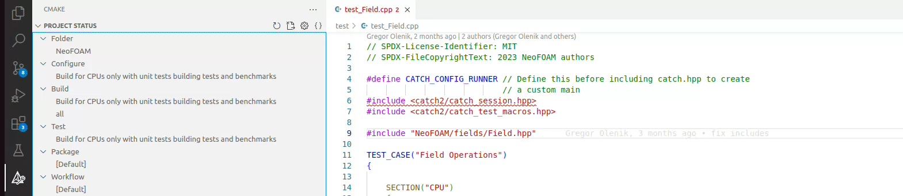

Installation¶
You can install NeoFOAM by following these steps:
Clone the NeoFOAM repository:
git clone https://github.com/exasim-project/NeoFOAM.git
Navigate to the NeoFOAM directory:
cd NeoFOAM
NeoFOAM uses Cmake to build, thus the standard Cmake procedure should work, however, we recommend using one of the provided Cmake presets detailed below below. From a build directory, you can execute:
mkdir build cd build cmake <DesiredBuildFlags> .. cmake --build . cmake --install .
The following can be chained with -D<DesiredBuildFlags>=<Value> to the Cmake command most and most relevant build flags are:
Flag |
Description |
Default |
|---|---|---|
CMAKE_BUILD_TYPE |
Build in debug or release mode |
Debug |
NEOFOAM_BUILD_APPS |
Build NeoFOAM with Applications |
ON |
NEOFOAM_BUILD_BENCHMARKS |
Build NeoFOAM with benchmarks |
OFF |
NEOFOAM_BUILD_DOC |
Build NeoFOAM with documentation |
ON |
NEOFOAM_BUILD_TESTS |
Build NeoFOAM with tests |
OFF |
Kokkos_ENABLE_SERIAL |
Enable Serial backend for Kokkos |
ON |
Kokkos_ENABLE_OPENMP |
Enable OpenMP backend for Kokkos |
OFF |
Kokkos_ENABLE_ROCM |
Enable ROCm backend for Kokkos |
OFF |
Kokkos_ENABLE_SYCL |
Enable SYCL backend for Kokkos |
OFF |
Kokkos_ENABLE_CUDA |
Enable CUDA backend for Kokkos |
OFF |
By opening the the project with cmake-gui you can easily set these flags and configure the build.
Building with Cmake Presets¶
Additionally, we provide several Cmake presets to set commonly required flags if you compile NeoFoam in combination with Kokkos.
cmake --list-presets # To list existing presets
To build NeoFOAM with Kokkos and CUDA support, you can use the following commands:
cmake --preset ninja-kokkos-cuda # To configure with ninja and common kokkos flags for CUDA devices cmake --build --preset ninja-kokkos-cuda # To compile with ninja and common kokkos flags for CUDA devices
It should be noted that the build directory changes depending on the chosen preset. This way you can have different build directories for different presets and easily switch between them.
Prerequisites¶
The following tools are used in the development of this project:
required tools for documentation: .. code-block:: bash
sudo apt install doxygen pip install pre-commit sphinx furo breathe sphinx-sitemap
required tools for compilation (ubuntu latest 24.04):
sudo apt update
sudo apt install \
ninja-build \
clang-16 \
gcc-10 \
libomp-16-dev \
python3 \
python3-dev \
build-essential
# installation of clang is optional
sudo apt remove clang-14
sudo rm /usr/bin/clang
sudo rm /usr/bin/clang++
sudo ln -s /usr/bin/clang-16 /usr/bin/clang
sudo ln -s /usr/bin/clang++-16 /usr/bin/clang++
Workflow with vscode¶
install the following extensions:
ms-vscode.cpptools
ms-vscode.cmake-tools
After installation, you can open the NeoFOAM directory with vscode and configure the build with cmake presets with the cmake extension as shown below:

After configuring the build, you can build the project with the build button or test in “testing” tab (flask icon).
To create the documentation, you can use the ‘Build Sphinx Documentation’ task in the vscode task menu. Type Ctrl+P and type task and press space and the build documentation and press enter. The documentation will be created in the docs_build directory.